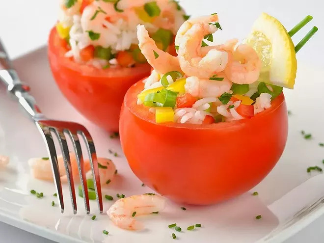

Tomatoes Stuffed with Rice and Shrimp

Description
A light and flavorful dish made with ripe tomatoes filled with a savory mix of rice, shrimp, herbs, and spices.
Baked until tender, it's perfect for a summer lunch or a cozy dinner.
Ingredients
- 4 tomatoes
- 30 g long grain rice
- 100 g shrimp
- 1 dash Worcestershire sauce
- 4 tablespoons mayonnaise
- lettuce leaves
- pepper
Steps
- Wash the tomatoes, remove the stems, and scoop out the insides. Keep the pulp in a bowl.
- Cook the rice to your liking in a pot of lightly salted boiling water. While
it's cooking, peel the shrimp.
- Once the rice is cooked, drain it and let it cool. Then mix it with the reserved tomato pulp
.
- Add the shrimp, 1 dash of Worcestershire sauce, and 4 tablespoons of mayonnaise. Season with
pepper, then mix well.
- Stuff the tomatoes with this mixture. Refrigerate for at least 1 hour. Serve on
washed and dried lettuce leaves.
Home